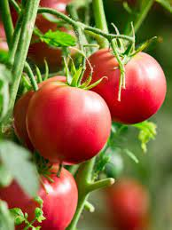
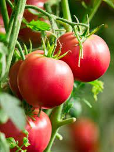

Tomato's tomatoes
Regular Tomato
Don't know what a Regular Tomato is?
Green Tomato
Don't know what a Green Tomato is?
Small tomato
Don't know what a Small Tomato is?
Purple Tomato
Don't know what a Purple Tomato is?
Don't know what a Regular Tomato is?
Don't know what a Green Tomato is?
Don't know what a Small Tomato is?
Don't know what a Purple Tomato is?